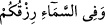

yemin ediyor, karşısındaki insan bu yahudiye güveniyor da Rezzak olan Allah’a
güvenmiyorsa böylelerini de Allah kahretsin!
Herim b. Sinan, Üveys-i Karanî (r.a.)’a: “Benim nerede bulunmamı istersin?” diye
sormuş, Üveys de ona: “İçlerine şüphe karışmış, öğüdün de kendilerine fayda vermediği
kalplere yazıklar olsun!” diye cevap vermiştir.
“O, sizin konuştuğunuz gibi”, sizin birbirinizle konuşmanız nasıl gerçekse “o şekilde
gerçektir.” Dolayısıyla bunun gerçek olduğundan şüphe etmemeniz gerekir. Nasıl ki
sizin kendi sözünüzde şüpheniz yoktur, aynı şekilde başkası değil, benim rızık vermem
konusunda da şüphe yoktur.
et-Te’vîlâtü’n-Necmiyye’de şöyle denilmektedir: Allah sizi konuşturunca siz de
O’nun kudretiyle şeksiz şüphesiz konuşabildiğiniz gibi, Allah’ın size vaadettiği rızkı
vermesi de aynı şekilde gerçektir, bunda da şüphe etmemeniz gerekir. Bu âyette temsilin
“konuşma” fiili ile yapılmasının sebebi, “nutk”un, insana has ve onun en belirgin vasfı
olmasındandır.
Bu âyette Allah’a tevekküle bir delil, bütün ihtiyaçlarımızı O’ndan talepte bulunmaya
bir teşvik ve insanları sebeplere sarılmaya bir yönlendirme vardır. Eğer insanlar tahkik
makamında olsalardı Allah onları ne göğe ne de yere yönlendirirdi. Çünkü gök
demirden yer de bakırdan olsaydı, bunlar ne yağmur yağdırsa ne de bitki bitirmeseydi
de bütün kulların rızkı Allah’ın kâmil velî kullarından bir velinin boynuna bağlı olsaydı
o velî bunların hiçbirine aldırış etmez, “eyvah ben ne yaparım?” diye bir endişeye
düşmezdi. Çünkü o artık esbâb aleminden çıkmış, vâsıtaların gerçek sâhibi olan Allah’a
ulaşmıştır. Allah Teâlâ işlerini sebepler ile değil sebepler yanında yapar. Bu bakımdan
O, şâyet sebepleri kaldırsa bile rızkı direkt olarak ulaştırmaya da kadirdir. Bunu da
“kün” emriyle yapar. Zira her şeyin mülkü de melekûtü da O’nun kudret elindedir.
Bahsedilen makam, gerçekten büyük bir makamdır. Bu hususta nefisler ıstırab ve
sarsıntıdan çok az selamette olurlar. Umulur ki Fettah-ı Zülcelâl bizleri fütûhât
dâiresine dahil eder. Âmin.
Esmaî’den şöyle bir hâdise nakledilir: Basra’da bir Cuma günü camiden çıkmış
gidiyordum. Ansızın karşıma devesi[19] üzerinde bir bedevi çıktı. Bana: “Ey adam! Sen
kimsin, kimlerdensin?” diye sorunca ben “Esmâ oğullarındanım” dedim. “Nereden
geldin?” dediğinde de Rahman olan Allah’ın kelâmının okunduğu Harem-i Şerif’ten
geldiğimi söyledim. Bunun üzerine: “Öyleyse ondan oku bakalım!” dedi. Zâriyât
sûresini okumaya başladım.  cümlesine geldiğimde, “kâfi” dedi, derhal
devesinin yanına varıp onu boğazladı. Etraftaki insanları çağırarak devenin etlerini
onlara dağıttı. Bir müddet sonra da kılıcının ve okunun yanına gitti, onları da kırarak
oradan uzaklaştı.
Harun Reşid’le birlikte hac yaparken Kâbe’yi tavafa başlamıştım ki bir de ne
göreyim karşımda bir adam ince bir sesle bana sesleniyor. Ona doğru yöneldim. Baktım
ki o, daha önce Basra’da gördüğüm bedevi. Benzi sararmış halde bana doğru geliyor.